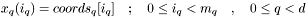

![\[ \{ [i_1, i+1] \times \ldots \times [i_d, i_d+1] | 0 \leq i_j < m_j - 1\} \]](form_13.png)
The purpose of this document is to describe the interface to data on a structured grid. In amira this this kind of data is denoted a Lattice.
Several concepts are gathered in a HxLattice interface. The concepts are briefly explained below.
The following requirements are not part of the current implementation.
This fact makes things a little bit intricated. A lattice of size in dimension is made up of only elements of dimensionality (voxels) in this dimension.
More formally a lattice has the same combinatorical topology as a grid whose cells in dimensions of size are
The combinatorical structure is completely known if you know the number of dimensions and the size of each dimension. These informations are available through HxLattice::getDataSpace().
struct latticedata { datatype0 set0[ndatavar0]; datatype1 set1[ndatavar1]; . . /* ndata sets */ . }
The sets are indexed using an integer. The information required to describe the data are available through HxLattice::nDataSets(), HxLattice::dataTypeOfSet(int), HxLattice::nDataVarOfSet(int).
More formally the geometry is a mapping from the combinatorical topology's space to the . How this mapping is specified is strongly dependent on the details of the mapping. Specifications might be given:
In general only the bounding box can be requested using HxLattice::getBoundingBox().
Mappings are identified using a HxLatticeType which can accessed using HxLattice::latticeType().
All amira lattice types are a combination of implicitly or explicitly given coordinates for the lower dimensions. Coordinates for higher dimensions given by 1 dimensional vectors which can be accessed using the Partially Rectilinear Lattice Geometry Interface, HxPartRectLatticeGeom::getRectPositions(). The positions are connected using straight lines (linear geometry).
The lattice types are detailed below.
All higher dimensions are explicitly given by a coordinate vector coords:
All higher dimensions are explicitly given by a coordinate vector coords:

All higher dimensions are explicitly given by a coordinate vector coords:
/* block io */ /* mmapped io */ /* meta data */ /*------------------------------------------------------------------------------------------------------*/ /* sync */ HxLattice::getDataOfSet() HxLattice::getHandle() HxLattice::getRangeOfSet() HxLattice::valueOfSet() HxLatticeHandle::move() HxLattice::getNameOfSet() /*------------------------------------------------------------------------------------------------------*/
The preferred way is to use mmapped io. This mode allows the HxLattice to optimize memory usage and avoids memory copy operations.
In HxLattice memory mapped IO is available through a HxLatticeHandle. With a call to HxLatticeHandle::move() you indicate which part of the lattice you're requesting. The implementation might start prefetch at this time. It is allowed to freely choose or change the memory layout. Only after a call to HxLatticeHandle::lockReadable() it has to fix the layout and return it until you release the selection by calling HxLatticeHandle::unlock ().
As a convenience to the user, the HxLattice also provides a way to write data into an user defined buffer (HxLattice::getDataOfSet()). This is the deprecated way of using the HxLattice but it may be a very convenient way because you can choose the memory layout which may ease processing. If you're planning to copy the data anyway then HxLattice::getData is preferred to using HxLatticeHandle and performing the copy manually. Using HxLattice::getDataOfSet directly might prevent the system from allocating own buffers.
Note: the following text may be outdated.
We're dealing with multidimensional datasets. These datasets, or parts of them could be located on disk, on a server or in main memory. The class which is used to describe the size of the dataset and a selection in it is McDataSpace. It doesnt require to have local memory attached. It provides as simplified version of hyperslabs similar to those in hdf5 (see http://hdf.ncsa.uiuc.edu/HDF5/doc/H5.intro.html#Intro-PMSelectHyper).
If you need access to the data they'll have to be transfered into main memory. A preferred way to do this when using parts of large files is to use memory mapped IO (mmap) instead of standard read/write IO (open, read, write). The main advantage is that the system (operating system, amira) deals with the memory management and can use this freedom (might be a burdon) to implement caching, prefetching and similar things.
The pysical memory is 1D memory. Normal IO only deals with getting contigous parts out of a larger 1D array which makes things rather simple compared to a multidimensional case. Non overlapping but adjacent blocks of memory can easily be managed in a cache to form one larger contigous part of 1D memory. This is not the case in higher dimensions. Dependent on the array order it might be the case (requesting two blocks adjacent in z might be joined to one large block in z) or not (requesting two block adjacent in any other direction can not be joined without changing the layout of the first block).
Another example: Assume a 1D array (char* buf, int size). 'Mapping' the part starting at start (int) with selsize (int) is simply done by some pointer arithmetic yielding the resulting array (buf + start, selsize). The mapping is trivial. Trying to do the same on a 2D array (char* buf, (sizex, sizey)) fails. There's no way to return a simple 2D array for any other selection than the whole array. But if you give some more freedom to the system it will be able to do the job. If you select ((startx, starty), (selx, sely)) the first element of your selection will be at buf + starty * sizex + startx. The next element in x will be at the next position but the next element in y will not be selx elements further but sizex elements. Additionaly to the pointer to the selection the system has to return the offsets describing the distances to the next elements for all dimensions. This is what a McMemorySelection does. The complete array can be described by a McMemoryDataspace. After selecting a part from it a McMemorySelection is the way to only describe this part.
Using McMemorySelection is harder than expecting simple multidimensional arrays but it gives the freedom to the system to use mapped IO instead of copying data. Selecting parts from a large array available completely in memory is done with pointer arithmetic. Selecting parts from an array residing on disk allows the system to freely choose the layout of a cache and returning a part of it in a McMemorySelection.